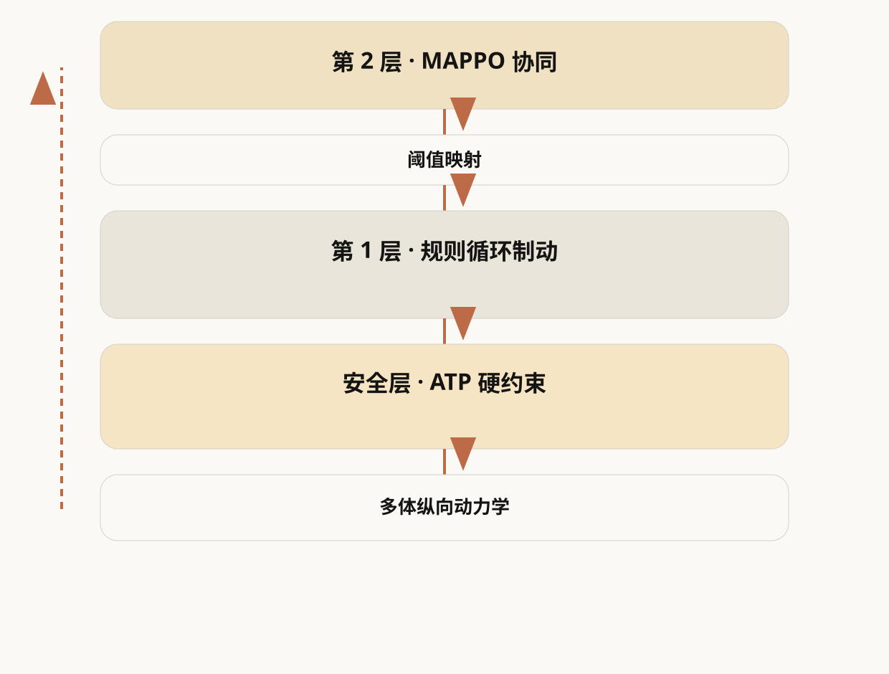
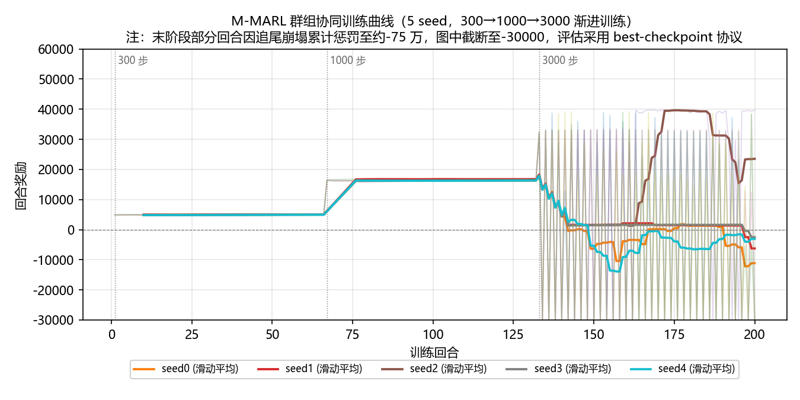
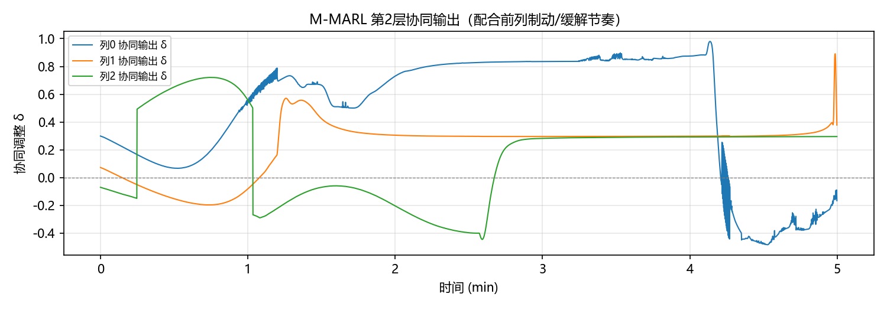
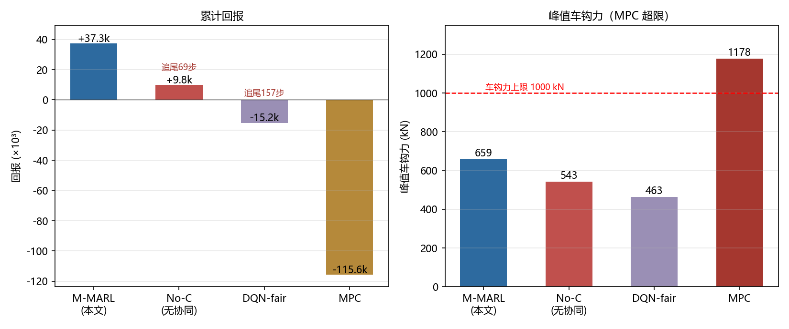
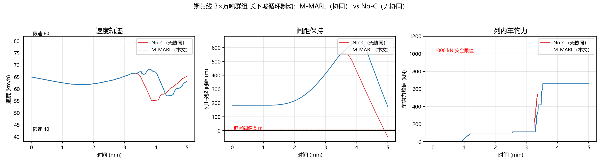
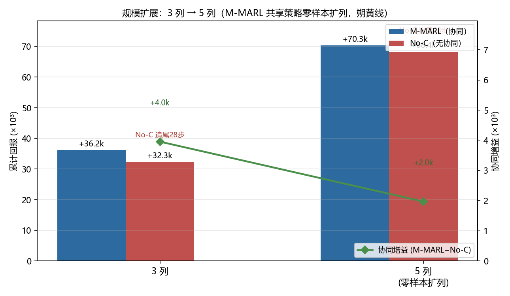

多智能体强化学习的
重载列车群组自动控制方法
汇报大纲
围绕长大下坡场景下重载列车群组的协同控制，依次介绍研究问题、方法设计、实验结果与待决问题。
研究背景与问题
海拔与坡度
长大下坡（朔黄线主坡 −10.9‰）不能依靠牵引调速，只能采用循环空气制动——调速具有非对称性，只能减速、难以自由加速。
长车列与车钩力
万吨列车长约 1.2 km（101 节），制动/缓解指令沿车列以有限波速传播，造成纵向冲动与车钩力（约束 ≤1000 kN）。
多列编队防追尾
多列车虚拟编队运行时，后车需同时控制速度与车间距；各车独立制动的相位错开可能导致追尾。
问题与难点：耦合约束与现有空白
长大下坡 ↔ 循环制动
只能减速、难以自由加速，调速具有非对称性。
循环制动 ↔ 车钩力
制动波/缓解波传播造成纵向冲动，车钩力可能超限（≤1000 kN）。
多车间距 ↔ 循环制动
后车无法预知前车制动意图，独立制动相位错开可能导致追尾。
| 现有研究方向 | 通常做法 | 盲点（对本场景不够） |
|---|---|---|
| 单列车长下坡自动驾驶 | 强化学习学循环制动调速 | 把整列车当单个质点，忽略车钩力 |
| 虚拟编队 / 车队协同 | 多智能体协作保持队形 | 面向城轨/汽车，无车钩力，假设可自由加减速 |
| 单列车车钩力优化 | 行车曲线优化、满足车钩力约束 | 仅单列车、依赖精确模型，未扩到多列协同 |
方法：分层架构
状态观测 oi（11 维 · 每 dt=0.1s 控制步）
速度/间距误差 · 车钩力 · 位置 · 尾部坡度 · 前车速度与制动强度
第 2 层 · MAPPO（宏观 · 协同）
输出阈值偏移 cadj ∈ [−1,1] → 映射带偏 vadj = 0.3·cadj·5 km/h（错峰制动防追尾）
第 1 层 · 规则循环制动（调速）
速度带滞回：v ≥ vmax+vadj → 制动；v ≤ vmin+vadj → 缓解。长大下坡只降不升，靠制动把速度夹回带内
安全层 · ATP 硬约束（保护层）
限速 ≤ vmax · |Fc| ≤ 1000 kN · 列车间距 ≥ dmin —— 喂给动力学前修正动作（纯规则、无学习参数）
多体纵向动力学（101 质点 · Newmark-β）
牵引 − 阻力 − 制动 − 坡度 + 车钩力 + 制动/缓解波传播
奖励回报 Rt + 下一状态 → 返回 ①
闭环迭代，直到 3000 步评估结束

自研仿真器：建模与文献对齐
输入
线路剖面（朔黄 23.8 km / 换线 20 km）、编组 1 机车 + 100 货车（万吨）、控制指令 throttle∈[−1,1]。
物理建模
车钩缓冲器为 MT-2 摩擦迟滞模型（于宗泽 2025）；制动力按实算法制动缸压力升压分档（李蔚 2023），制动/缓解波沿 101 节车列并行传播 200 m/s（Zhang 2025）；运行阻力为标准 Davis 形式（Tang 2020 / Fu 2019），坡度分段线性剖面（樊运新 2024）。
积分求解
Newmark-β 隐式积分（Newmark 1959），dt = 0.01 s，逐节输出速度 / 位置 / 车钩力 / 加速度。
与文献对齐
| 基准 | 文献工况 | 仿真 | 文献值 | 判定 |
|---|---|---|---|---|
| A·朔黄实测（张二田2021） | 2 万吨 · 循环制动 | 1989 kN | 836~2142 kN | ✓ 落区间 |
| B·万吨单次制动（杨敏） | −6‰ · 60 km/h 至停车 | 651 / 671 kN | 634 kN | ✓ 偏差 +3~6% |
训练流程：MAPPO + Curriculum 课程学习
初始化
共享策略 π + 集中式评论家 V · 3 个随机种子独立训练
Curriculum 课程：horizon 300 → 1000 → 3000 步
N 列车并行采样轨迹（600 eps）
GAE 优势估计 · λ=0.95 γ=0.99
PPO clip 更新 · ε=0.2 · 4 epochs
KL>0.015 → 提前停止 · 保存 best + final
全程评估（确定性策略 3000 步）
回报 / 追尾步数 / 峰值车钩力 / 最小间距
| 关键超参数 | 取值 |
|---|---|
| 算法 | MAPPO（共享策略 π + 集中评论家 V） |
| 学习率 / 熵系数 | 5×10⁻⁵ / 0.005 |
| PPO clip / epochs | ε=0.2 / 4 |
| GAE（λ, γ） | 0.95 / 0.99 |
| Curriculum horizon | 300 → 1000 → 3000 步 |
| 并行样本 / 评估 | 600 轨迹 · best-checkpoint 确定性 3000 步 |

健壮性：随机初态下 M-MARL 保持稳健

对行车扰动稳健
把列车初始速度在 55–75 km/h 内随机化后重测，M-MARL 依旧 0 追尾、报 +36,246、峰值车钩力 634 kN，全 seed 满足 1000 kN 安全限——控制不依赖特定初态。
主结果：M-MARL 0 追尾、车钩力守约，其余降级
| 方法 | 回报 | 追尾步数 | 车钩力峰(kN) | 最小间距(m) |
|---|---|---|---|---|
| M-MARL（本文） 3 收敛 seed 均值 | +37,342 | 0 | 659 | 175 |
| No-C 无协同 δ=0 | +9,791 | 69 | 543 | −45 |
| DQN-fair 同架构 MAPPO→DQN | −15,215 | 157 | 463 | −116 |
| MPC 传统模型预测控制 | −115,622 | 0 | 1,178 ⚠ | 105 |

追尾：协同是必要项
M-MARL 0 追尾；No-C（同架构仅去掉协同）追尾 69 步、DQN-fair（同架构仅换算法）追尾 157 步——追尾差异来自协同学习，而非分层结构本身。
车钩力 & 掉速
规则循环制动方法均守约 <1000 kN、不掉下限；MPC 超限至 1,178 kN、71.6% 时间跌破最低缓解速度（急制动+降速）。
追尾机理：失去协同后，间距中途崩溃

前 2400 步，M-MARL 与 No-C 的最小间距几乎一致；此后 No-C 因后车无法预知前车制动意图、独立制动的相位越走越错位，其最小间距跌破零（追尾 69 步）。M-MARL 通过协同阈值调整使各列车制动/缓解相位错开，始终保持间距。
崩溃后速度表现
No-C：跟随车急制动追赶，间距跌破零（追尾）
M-MARL：维持循环制动波形，速度在 [40,80] km/h
压力消融：间距越压缩，协同增益越大
| 目标间距 | M-MARL | No-C | 协同增益 | No-C 追尾步数 |
|---|---|---|---|---|
| 100 m | +37,342 | +9,791 | +27,551 | 69 |
| 40 m | +37,382 | −11,137 | +48,519 | 179 |
M-MARL 对压力稳健
回报几乎不变（+37,342 → +37,382），且始终 0 追尾、车钩力 659 kN 守约。
协同增益单调放大
增益 = M-MARL − No-C：+27,551 → +48,519（近翻倍），间距越压、协同越有价值。

域外实验：扩列到 5 列、换到更陡的线，都不重训
扩列：3 列训练权重 → 5 列直接复用
| 指标 | 3 列（训练） | 5 列（零样本扩列） |
|---|---|---|
| 协同增益 | +27,551 | +1,970 |
| 追尾步数 | 0 | 0 |
| 车钩力峰 | 659 kN | 634 kN |
换线：朔黄 23.8 km（−10.9‰）→ 20 km（−9.5~−11.5‰，更陡）
| 方法 | 回报 | 追尾步数 | 车钩力峰 |
|---|---|---|---|
| M-MARL（照搬） | +36,120 | 0 | 623 kN |
| No-C（无协同） | −6,688 | 143 | — |

局限与待补
方法主体已完成、数据齐全；收尾就差三项工程项——不改变结论，只把证据做得更稳。
统计显著性检验
「0 追尾 / 协同增益为正」目前只撑在 5 个随机种子上；把种子补到 50 个，做 Fisher 精确检验 + 效应量，给结论一个显著性置信度。
压力消融中间档位
「间距越压、协同增益越大」目前只有 100 m 与 40 m 两个端点的证据；补上中间档位，让单调关系成一条连续证据链。
完整剖面评估
主结果 / 追尾机理现在只跑到朔黄线最陡的前 4.6 km（3000 步未到坡底）；补一条完整剖面的长评估，或如实标注为「最陡段 5 min 评估窗」。